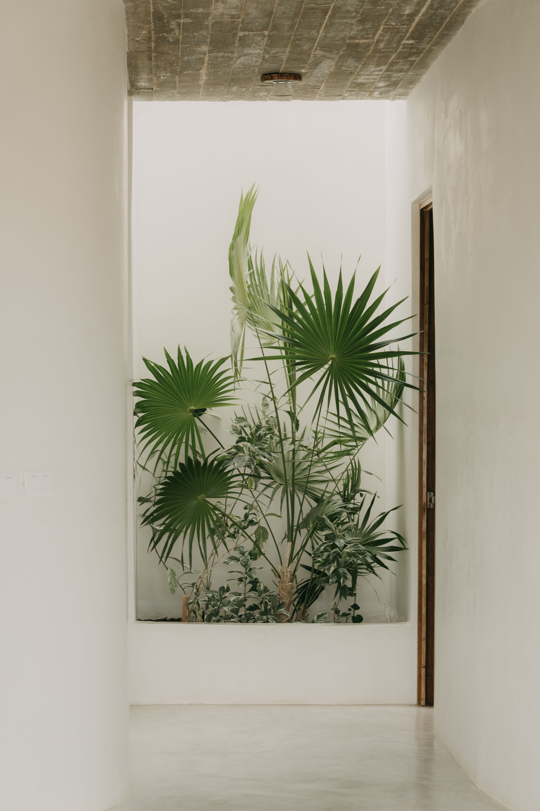
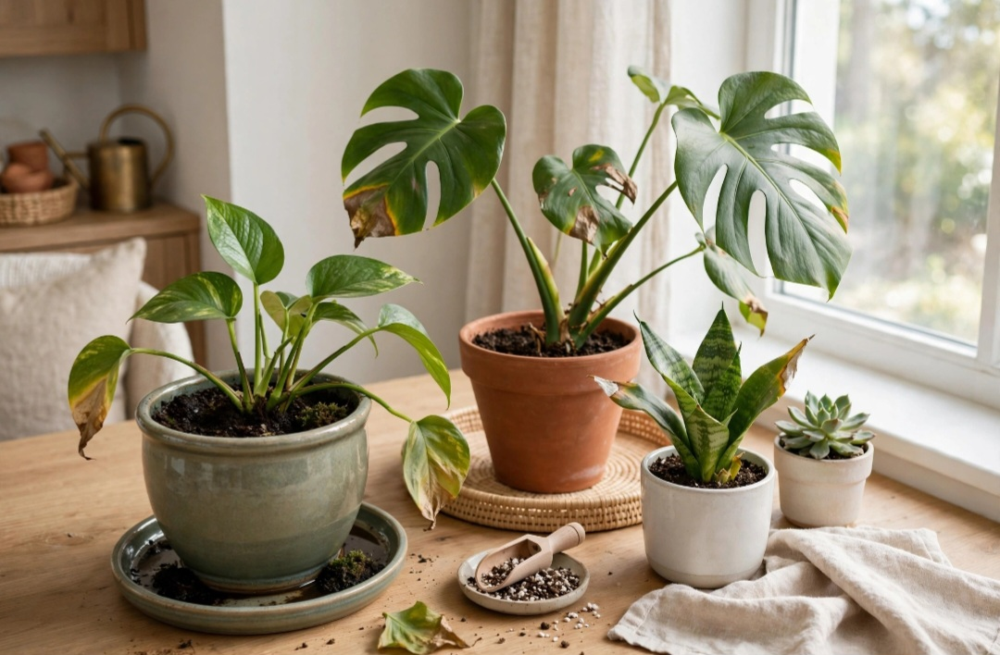

En este artículo
Introducción
Guía práctica sobre cómo elegir la iluminación para el comedor con criterios de proporción, funcionalidad, mantenimiento y decoración para tomar decisiones más acertadas en casa.
Tomar una buena decisión empieza por observar el espacio real, sus medidas, la luz disponible y la forma en que se utiliza cada día. Esta guía desarrolla los criterios principales para elegir con más seguridad y evitar cambios innecesarios.
Planifica la iluminación general
El comedor necesita luz suficiente para comer, conversar y limpiar, pero también una atmósfera agradable. Empieza por identificar tamaño, forma de la mesa y otras actividades realizadas en la zona.
Antes de comprar o modificar nada, mide y observa el espacio durante varios momentos del día. La luz natural, los recorridos y los hábitos cotidianos ofrecen información que una fotografía no muestra. Anota las necesidades principales y ordénalas por importancia.
Trabajar por etapas reduce errores. Resuelve primero función y seguridad; después color, textura y detalles. Una vez realizado un cambio importante, úsalo durante varios días antes de añadir otra cosa. Así resulta más fácil identificar qué mejora realmente el ambiente.
Una decisión acertada debe relacionarse con el resto del ambiente. Observa materiales, colores, dimensiones y elementos que permanecerán. No hace falta que todo coincida exactamente: repetir uno o dos rasgos crea una relación suficiente y evita un resultado rígido.
Prueba siempre que sea posible antes de comprometerte. Muestras, plantillas de papel, cinta en el suelo o una configuración temporal permiten comprobar proporciones y comodidad. Esta fase de prueba suele evitar devoluciones y trabajos innecesarios.
Finalmente, piensa en cómo cambiará la solución con el tiempo. La luz, las estaciones, el desgaste y las necesidades de la familia pueden modificar la forma de utilizar el espacio. Elegir con cierto margen de adaptación hace que el resultado dure más.
Ilumina correctamente la mesa
La lámpara sobre la mesa debe relacionarse con sus dimensiones y quedar a una altura que ilumine sin bloquear miradas. En mesas largas pueden funcionar varias luminarias coordinadas.
El presupuesto también forma parte del proyecto. Establece una cantidad máxima y prioriza elementos que se utilizan a diario. Varias compras pequeñas realizadas por impulso pueden costar más que una solución duradera y adecuada.
Reutilizar lo existente es una herramienta válida. Cambiar una pieza de lugar, limpiar, reparar o combinarla de otra manera puede transformar el resultado sin aumentar la cantidad de objetos. La decoración más coherente no siempre es la que incorpora más novedades.
Una decisión acertada debe relacionarse con el resto del ambiente. Observa materiales, colores, dimensiones y elementos que permanecerán. No hace falta que todo coincida exactamente: repetir uno o dos rasgos crea una relación suficiente y evita un resultado rígido.
Prueba siempre que sea posible antes de comprometerte. Muestras, plantillas de papel, cinta en el suelo o una configuración temporal permiten comprobar proporciones y comodidad. Esta fase de prueba suele evitar devoluciones y trabajos innecesarios.

Finalmente, piensa en cómo cambiará la solución con el tiempo. La luz, las estaciones, el desgaste y las necesidades de la familia pueden modificar la forma de utilizar el espacio. Elegir con cierto margen de adaptación hace que el resultado dure más.
Combina diferentes capas de luz
Combinar luz general, luz sobre la mesa y puntos ambientales permite adaptar el comedor a diferentes momentos. Los reguladores compatibles pueden aumentar flexibilidad.
Piensa desde el principio en el mantenimiento. Revisa instrucciones del fabricante, limpieza, resistencia y vida útil. Una solución que exige cuidados incompatibles con tu rutina terminará deteriorándose o siendo reemplazada antes de tiempo.
La seguridad debe mantenerse por encima de la estética. Instalaciones eléctricas, fijaciones, elementos pesados y productos técnicos requieren sistemas apropiados. Cuando el trabajo supera una intervención decorativa sencilla, recurre a un profesional cualificado.
Una decisión acertada debe relacionarse con el resto del ambiente. Observa materiales, colores, dimensiones y elementos que permanecerán. No hace falta que todo coincida exactamente: repetir uno o dos rasgos crea una relación suficiente y evita un resultado rígido.
Prueba siempre que sea posible antes de comprometerte. Muestras, plantillas de papel, cinta en el suelo o una configuración temporal permiten comprobar proporciones y comodidad. Esta fase de prueba suele evitar devoluciones y trabajos innecesarios.
Finalmente, piensa en cómo cambiará la solución con el tiempo. La luz, las estaciones, el desgaste y las necesidades de la familia pueden modificar la forma de utilizar el espacio. Elegir con cierto margen de adaptación hace que el resultado dure más.
Evita errores de escala y deslumbramiento
Una lámpara demasiado pequeña pierde presencia y una excesivamente grande puede dominar. También deben controlarse reflejos y bombillas visibles que causen deslumbramiento.
Mantén una jerarquía visual. Elige uno o dos elementos protagonistas y deja que los demás acompañen. Repetir un material, tono o acabado en pequeñas dosis crea continuidad sin necesidad de utilizar conjuntos idénticos.
Al terminar, fotografía el espacio desde los puntos principales. Si algo domina demasiado, interrumpe el paso o parece innecesario, retíralo temporalmente. Editar es tan importante como añadir.
Una decisión acertada debe relacionarse con el resto del ambiente. Observa materiales, colores, dimensiones y elementos que permanecerán. No hace falta que todo coincida exactamente: repetir uno o dos rasgos crea una relación suficiente y evita un resultado rígido.
Prueba siempre que sea posible antes de comprometerte. Muestras, plantillas de papel, cinta en el suelo o una configuración temporal permiten comprobar proporciones y comodidad. Esta fase de prueba suele evitar devoluciones y trabajos innecesarios.

Finalmente, piensa en cómo cambiará la solución con el tiempo. La luz, las estaciones, el desgaste y las necesidades de la familia pueden modificar la forma de utilizar el espacio. Elegir con cierto margen de adaptación hace que el resultado dure más.
Plan práctico antes de decidir
Haz una lista con las condiciones que la solución debe cumplir y separa necesidades de preferencias. Las necesidades son aquellas que afectan a uso, seguridad o mantenimiento; las preferencias pueden ajustarse según presupuesto y estilo.
Compara al menos dos alternativas y revisa medidas, materiales, instalación y cuidado. Si existe una muestra o posibilidad de prueba, utilízala. Las decisiones tomadas con información concreta suelen mantenerse mejor que las basadas únicamente en una imagen.
Después de instalar o aplicar el cambio, evita seguir comprando inmediatamente. Utiliza el espacio durante una semana, detecta si falta algo y completa únicamente lo necesario. Este método ayuda a conservar equilibrio y presupuesto.
Cómo calcular visualmente la proporción de la lámpara
La luminaria debe relacionarse principalmente con la mesa y no solo con el tamaño de la habitación. Sobre una mesa pequeña, una pieza enorme puede resultar invasiva; sobre una mesa larga, una lámpara mínima deja extremos visualmente desconectados. En vez de confiar únicamente en una cifra, crea una plantilla de cartón o papel para representar el volumen antes de comprar.
Si utilizas dos o tres lámparas, reparte la composición de forma uniforme y considera cómo se verá desde las entradas. Las luminarias repetidas aportan ritmo, mientras una pieza lineal puede simplificar el conjunto. Deja suficiente espacio visual respecto a paredes y muebles altos.
La altura también debe probarse desde una posición sentada y de pie. El objetivo es iluminar la mesa sin bloquear la conversación ni producir una fuente brillante directamente a la altura de los ojos.
Temperatura de color y reproducción de los alimentos
Una luz demasiado fría puede hacer que el comedor se sienta menos acogedor, mientras una luz excesivamente cálida puede alterar la percepción de algunos colores. Para un ambiente doméstico, muchas personas prefieren una temperatura cálida o cálida-neutra, pero la elección debe coordinarse con las otras luces visibles desde el comedor.
Además de la temperatura, presta atención a la calidad de reproducción del color indicada por el fabricante. Una buena reproducción ayuda a que alimentos, madera, textiles y decoración se perciban de forma natural.
Evita mezclar sin intención bombillas de temperaturas muy diferentes dentro de una misma escena. Si cocina y comedor forman un espacio abierto, busca una transición coherente para que las zonas no parezcan iluminadas por sistemas desconectados.
Regulación de intensidad y escenas para distintos usos
El comedor puede utilizarse para desayunar, trabajar, hacer tareas, celebrar una cena o recibir visitas. Una única intensidad fija rara vez responde igual de bien a todas estas actividades. Un regulador compatible con luminaria y bombilla permite aumentar la luz para tareas y reducirla durante una cena.
Comprueba siempre compatibilidad entre regulador, driver y fuente LED. Las incompatibilidades pueden producir parpadeo, zumbidos o un rango de regulación deficiente. Cuando sea necesario modificar cableado, utiliza un electricista cualificado.

Las lámparas auxiliares del entorno también ayudan. Una luz sobre un aparador o un aplique puede mantener el fondo visible cuando se reduce la intensidad sobre la mesa, creando una escena más equilibrada.
Errores frecuentes en la iluminación del comedor
Depender únicamente de una lámpara decorativa sobre la mesa puede dejar rincones oscuros y dificultar la limpieza. El problema contrario es iluminar todo con focos intensos y uniformes, eliminando la sensación de profundidad. Las capas permiten evitar ambos extremos.
Otro error es elegir la luminaria antes de decidir la mesa. Si posteriormente cambia la posición o el tamaño del mueble, la lámpara puede quedar descentrada. Planifica ambos elementos juntos siempre que sea posible.
Finalmente, controla reflejos en superficies brillantes y pantallas cercanas. Una iluminación confortable debe permitir mirar a las personas y moverse por el espacio sin deslumbramiento.
Qué hacer si la mesa es extensible o cambia de posición
Las mesas extensibles plantean una dificultad adicional: la luminaria debe funcionar tanto en formato diario como cuando la mesa aumenta de tamaño. Si la extensión se utiliza con frecuencia, considera una lámpara lineal suficientemente amplia o varias luminarias que distribuyan la luz a lo largo del eje.
Cuando la mesa se mueve para recibir invitados, una lámpara fija puede quedar descentrada. Antes de instalar, define cuál será la posición habitual y cuánto cambia en ocasiones especiales. En algunos casos resulta preferible mantener el punto decorativo sobre la posición diaria y reforzar las reuniones con iluminación general, en vez de diseñar toda la instalación para un uso excepcional.
También importa la forma. Una luminaria redonda puede dialogar naturalmente con una mesa circular; una pieza alargada suele acompañar bien mesas rectangulares. No es una regla obligatoria, pero ayuda a crear proporción.
Si comedor y cocina comparten ambiente, observa simultáneamente las luminarias de ambas zonas. Pueden ser diferentes, pero conviene que compartan algún rasgo —acabado, temperatura de luz o lenguaje formal— para evitar una composición fragmentada.
Elegir bombillas y mantener una luz uniforme
Cuando una luminaria utiliza bombillas reemplazables, revisa casquillo, potencia máxima admitida, flujo luminoso y compatibilidad con regulación. No elijas únicamente por vatios: en tecnología LED, la cantidad de luz se compara mejor mediante los datos de flujo indicados por el fabricante.
Si una lámpara lleva varias bombillas visibles, utiliza modelos con características coherentes. Diferencias de temperatura de color o intensidad se perciben con facilidad y pueden hacer que la composición parezca accidental.
Guarda la referencia del modelo instalado. Cuando sea necesario sustituir una unidad, será más fácil mantener una apariencia uniforme. Limpia pantallas y difusores con el equipo desconectado y siguiendo las instrucciones del fabricante, ya que el polvo reduce la luz disponible.
Preguntas frecuentes
¿Cuál es la mejor manera de empezar?
Empieza observando y midiendo antes de comprar. Para cómo elegir la iluminación para el comedor, conviene definir primero la necesidad principal y después comparar opciones.
¿Cuánto tiempo se necesita para ver resultados?
Muchos cambios se perciben de inmediato, pero es recomendable observar el resultado durante varios días y con distintas condiciones de luz antes de considerarlo definitivo.
¿Qué errores deberían evitarse?
Evita elegir únicamente por tendencia, comprar sin medir, ignorar el mantenimiento y sacrificar comodidad o seguridad por un resultado puramente visual.
Conclusión
Cómo elegir la iluminación para el comedor resulta más sencillo cuando función, proporción, mantenimiento y estética se consideran en conjunto. Medir, comparar y probar antes de decidir permite crear espacios más cómodos y duraderos sin depender de soluciones improvisadas.